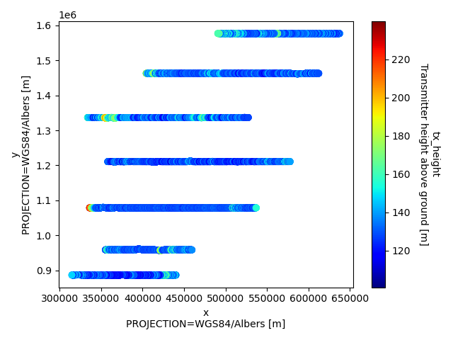
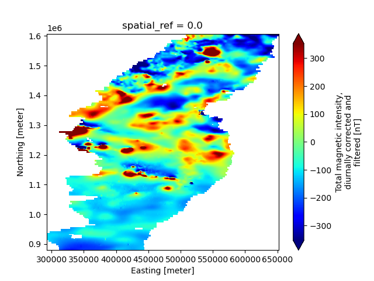

Note
Go to the end to download the full example code.
ASEG to NetCDF
This example demonstrates the workflow for creating a GS file from the ASEG file format, as well as how to add multiple associated datasets to the Survey (e.g., Tabular and Raster groups). Specifically, this AEM survey contains the following datasets:
Raw AEM data, from the Tempest system
Inverted resistivity models
An interpolated map of total magnetic intensity
Dataset Reference: Minsley, B.J., James, S.R., Bedrosian, P.A., Pace, M.D., Hoogenboom, B.E., and Burton, B.L., 2021, Airborne electromagnetic, magnetic, and radiometric survey of the Mississippi Alluvial Plain, November 2019 - March 2020: U.S. Geological Survey data release, https://doi.org/10.5066/P9E44CTQ.
import matplotlib.pyplot as plt
from os.path import join
import gspy
Convert the ASEG data to NetCDF
Initialize the Survey
# Path to example files
data_path = '..//..//..//..//example_material//example_2'
# Survey Metadata file
metadata = join(data_path, "data//Tempest_survey_md.yml")
# Establish survey instance
survey = gspy.Survey.from_dict(metadata)
Raw Data -
data_container = survey.gs.add_container('data', **dict(content = "raw and processed data"))
# Import raw AEM data from ASEG-format.
# Define input data file and associated metadata file
d_data = join(data_path, 'data//Tempest.dat')
d_supp = join(data_path, 'data//Tempest_data_md.yml')
# Add the raw AEM data as a tabular dataset
rd = data_container.gs.add(key='raw_data', data_filename=d_data, metadata_file=d_supp)
print(rd['tempest_system'])
<xarray.DataTree 'tempest_system'>
Group: /survey/data/raw_data/tempest_system
Dimensions: (index: 20701, gate_times: 15, nv: 2,
n_transmitter: 1, waveform_time: 7,
n_receiver: 2, n_component: 2)
Coordinates:
* nv (nv) int64 16B 0 1
* n_transmitter (n_transmitter) int64 8B 0
* waveform_time (waveform_time) float64 56B -0.01667 ... 0....
* n_receiver (n_receiver) int64 16B 0 1
* n_component (n_component) int64 16B 0 1
Inherited coordinates:
* index (index) int32 83kB 0 1 2 ... 20698 20699 20700
* gate_times (gate_times) float64 120B 1.085e-05 ... 0.0...
Data variables: (12/18)
gate_times_bnds (gate_times, nv) float64 240B -0.0001248 .....
transmitter_area (n_transmitter) int64 8B 155
transmitter_waveform_type (n_transmitter) <U6 24B 'square'
transmitter_waveform_current (waveform_time) float64 56B 0.0 1.0 ... 0.0
transmitter_scale_factor (n_transmitter) float64 8B 0.5
transmitter_peak_current (n_transmitter) int64 8B 560
... ...
receiver_orientation (n_receiver) <U1 8B 'z' 'x'
component_transmitters (n_component) <U1 8B 'z' 'z'
component_receivers (n_component) <U1 8B 'z' 'x'
component_txrx_dx (n_component) int64 16B -120 -120
component_txrx_dy (n_component) int64 16B 0 0
component_txrx_dz (n_component) int64 16B -52 -52
Attributes:
type: system
mode: airborne
method: electromagnetic
submethod: time domain
instrument: tempest
Inverted Models
model_container = survey.gs.add_container('models', **dict(content = "inverted models"))
# Import inverted AEM models from ASEG-format.
# Define input data file and associated metadata file
m_data = join(data_path, 'model//Tempest_model.dat')
m_supp = join(data_path, 'model//Tempest_model_md.yml')
# Read model data and format as Tabular class object
model_container.gs.add(key='inverted_models', data_filename=m_data, metadata_file=m_supp)
Magnetic Intensity Map
data_derived = data_container.gs.add_container('derived_maps', **dict(content = "derived maps"))
# Import the magnetic data from TIF-format.
# Define input metadata file (which contains the TIF filenames linked with desired variable names)
r_supp = join(data_path, 'data//Tempest_raster_md.yml')
# Read data and format as Raster class object
data_derived.gs.add(key='maps', metadata_file = r_supp)
# Save NetCDF file
d_out = join(data_path, 'data//Tempest.nc')
survey.gs.to_netcdf(d_out)
Read back in the NetCDF file
new_survey = gspy.open_datatree(d_out)['survey']
# Once the survey is read in, we can access variables like a standard xarray dataset.
print(new_survey['data/derived_maps/maps'].magnetic_tmi)
print(new_survey['data/derived_maps/maps']['magnetic_tmi'])
<xarray.DataArray 'magnetic_tmi' (y: 1212, x: 599)> Size: 6MB
[725988 values with dtype=float64]
Coordinates:
spatial_ref float64 8B ...
* x (x) float64 5kB 2.928e+05 2.934e+05 ... 6.51e+05 6.516e+05
* y (y) float64 10kB 1.607e+06 1.606e+06 ... 8.808e+05 8.802e+05
Attributes:
standard_name: total_magnetic_intensity
long_name: Total magnetic intensity, diurnally corrected and filtered
units: nT
null_value: 1.70141e+38
valid_range: [-17504.6640625 11490.32324219]
grid_mapping: spatial_ref
<xarray.DataArray 'magnetic_tmi' (y: 1212, x: 599)> Size: 6MB
[725988 values with dtype=float64]
Coordinates:
spatial_ref float64 8B ...
* x (x) float64 5kB 2.928e+05 2.934e+05 ... 6.51e+05 6.516e+05
* y (y) float64 10kB 1.607e+06 1.606e+06 ... 8.808e+05 8.802e+05
Attributes:
standard_name: total_magnetic_intensity
long_name: Total magnetic intensity, diurnally corrected and filtered
units: nT
null_value: 1.70141e+38
valid_range: [-17504.6640625 11490.32324219]
grid_mapping: spatial_ref
Plotting
# Make a scatter plot of a specific tabular variable, using GSPy's plotter
plt.figure()
new_survey['data']['raw_data'].gs.scatter(x='x', hue='tx_height', cmap='jet')
# Make a 2-D map plot of a specific raster variable, using Xarrays's plotter
plt.figure()
new_survey['data/derived_maps/maps']['magnetic_tmi'].plot(cmap='jet', robust=True)
plt.show()
- 
- 
Total running time of the script: (0 minutes 14.934 seconds)